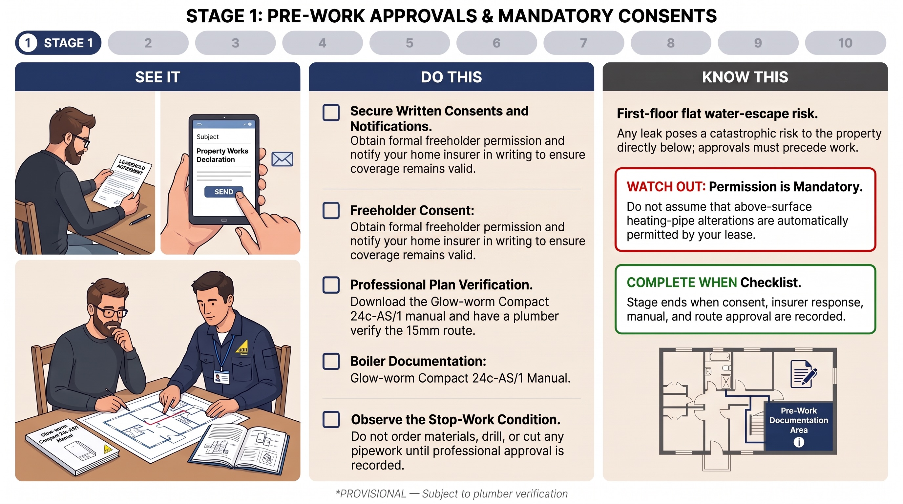
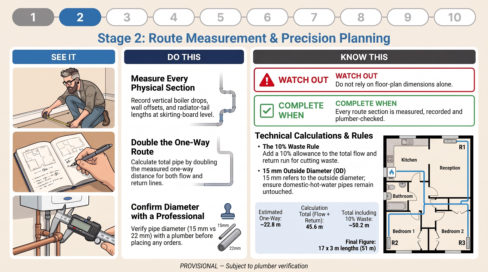
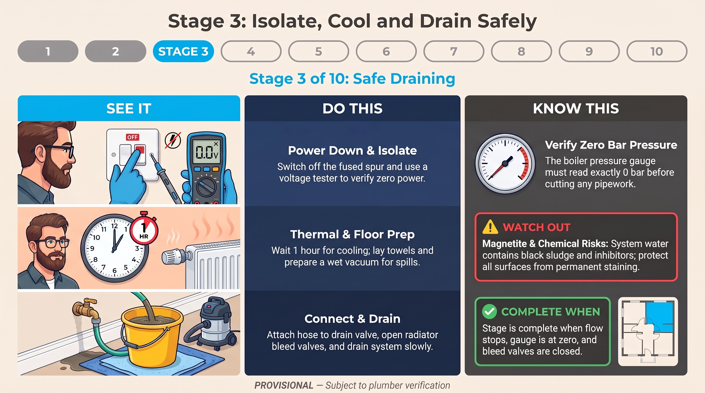
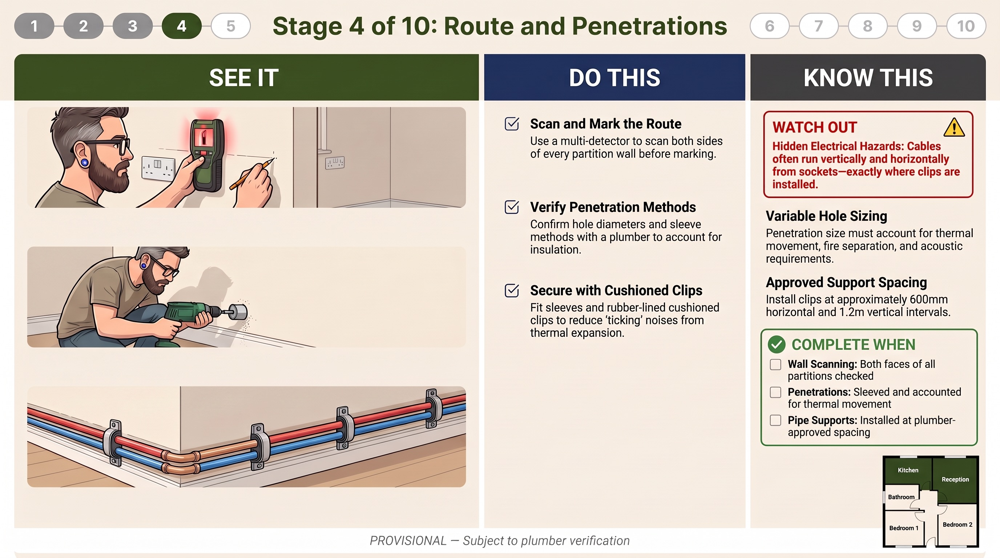
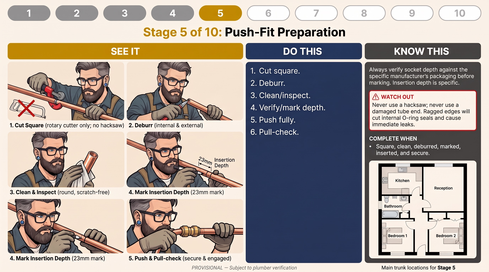
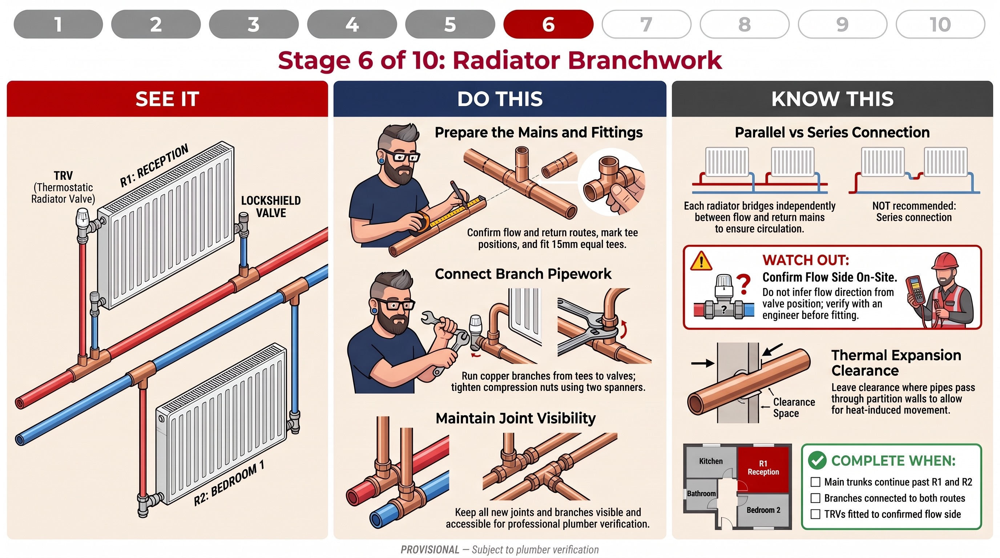
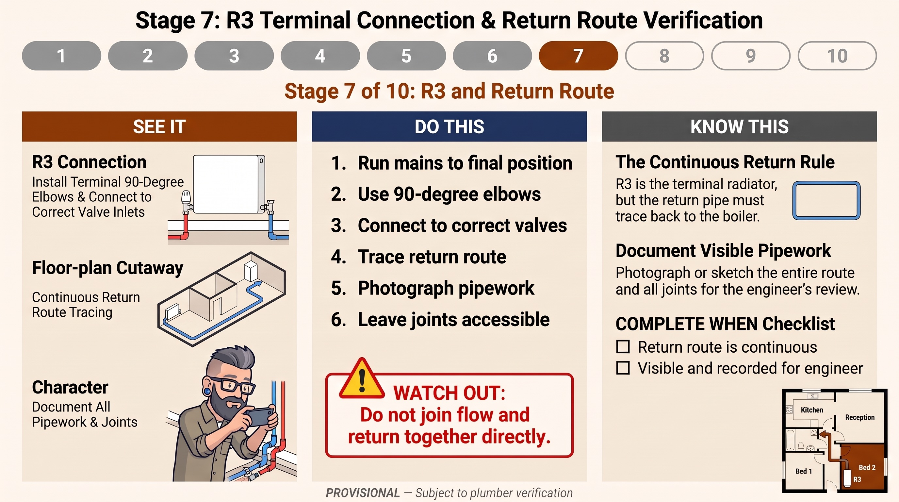
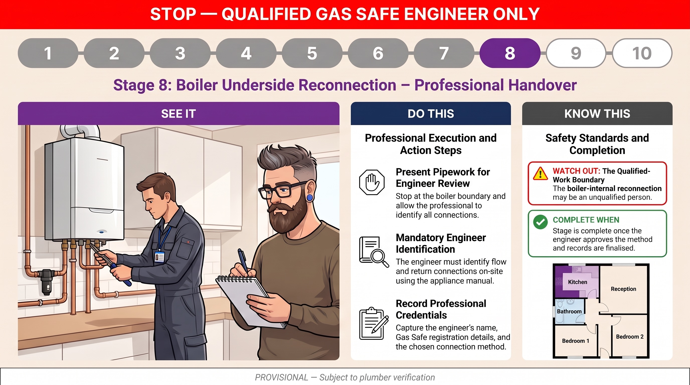
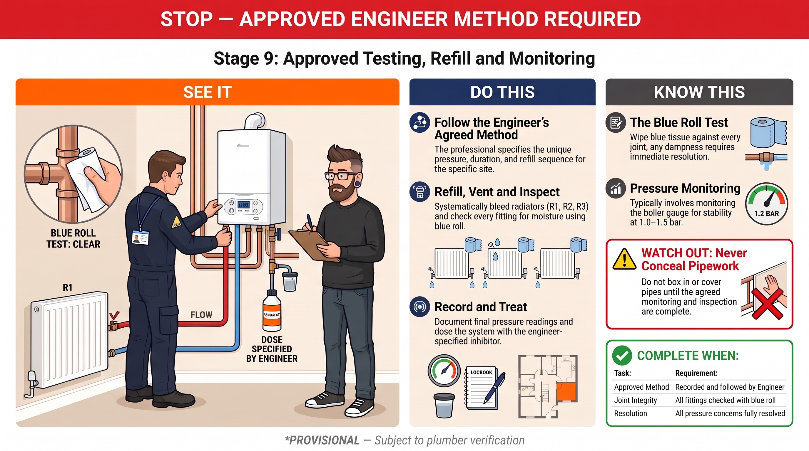
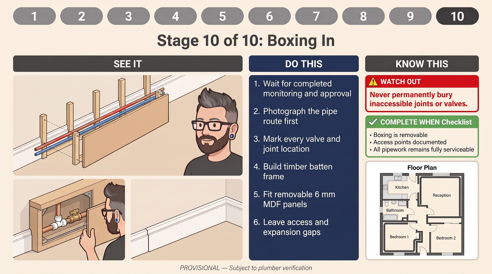

Above-surface 15mm copper two-pipe system · Pegler Tectite Sprint · No soldering required

Secure written freeholder consent, notify your home insurer in writing, download the Glow-worm Compact 24c manual, and obtain plumber verification of the 15mm plan before ordering any materials or touching any pipework.
You live above another flat. A water leak is a five-figure insurance claim in your neighbour's ceiling. Do NOT order pipe, cut, or drill until freeholder consent, insurer notification, and plumber approval are all confirmed in writing.
Obtain written freeholder or managing-agent consent for above-surface pipework alterations.
Notify your home insurer in writing before any work begins. Get written confirmation.
Download and print the Glow-worm Compact 24c-AS/1 installation manual from glow-worm.co.uk.
Have a qualified heating engineer review and approve the provisional 15mm pipe route.
Book a Gas Safe registered engineer for Stage 8 (boiler connections).
Most flat leases require freeholder or managing agent consent before altering services. Search your lease for "alterations", "services", or "consent". Email your managing agent: "Do I need consent to install above-surface pipework to replace a failed embedded heating circuit?" Get the response in writing.
What to say: "I am planning to install above-surface 15mm copper pipework to replace a failed embedded heating circuit in my first-floor flat. The work involves connecting to existing copper stubs above the concrete floor and running new pipe along walls to three radiators. I will not be touching any gas connections. Please confirm this work is covered under my policy."
| You CAN do | Cut and join copper flow/return pipes. Fit push-fit fittings. Replace radiator valves. Refill and bleed the system. |
|---|---|
| You CANNOT do | Touch the gas supply pipe. Adjust the gas valve or burner. Disconnect or reconnect the boiler's gas connection. |
| Book now | Contact a Gas Safe engineer now and book them for Stage 8. They need to be available when your pipework is complete. |
Before draining the system, run the heating briefly and feel the pipes near the boiler. The flow pipe (hot water going out) will be noticeably hotter. Label both pipes with tape: "FLOW" and "RETURN". This label stays on until the system is fully commissioned.

Physically measure the pipe route on site with a tape measure before ordering any materials. Do not rely on floor plan dimensions alone. Record every section.
Do NOT rely on floor-plan dimensions alone. Measure vertical drops, wall offsets, valve centres, and radiator-tail lengths on site. Do NOT order pipe until the route is physically measured and the plumber has approved the pipe diameter.
Measure every physical section at skirting-board level. Record vertical boiler drops and wall offsets.
Double the one-way route length to get the total for both flow and return pipes.
Confirm pipe diameter with a vernier caliper on the existing boiler stubs (15mm OD = 15mm pipe).
Add 10% waste allowance. Buy 17 × 3m lengths = 51m (Screwfix Code 98683).
Confirm final quantity with plumber before ordering.
Replace each figure with your on-site tape measurement before ordering.
| Section | Est. (m) | Measured (m) |
|---|---|---|
| Boiler drop to floor level | 1.2 | |
| Along kitchen wall to partition | 2.7 | |
| Through kitchen–reception wall | 0.3 | |
| Reception room — full width | 4.9 | |
| Right turn to Radiator R1 | 1.5 | |
| R1 branch tails | 0.5 | |
| Through reception–bedroom wall | 0.3 | |
| Into Bedroom 1 to Radiator R2 | 1.5 | |
| R2 branch tails | 0.5 | |
| Right turn — Bedroom 1 bottom wall | 2.1 | |
| Through Bedroom 1–Bedroom 2 wall | 0.3 | |
| Into Bedroom 2 to Radiator R3 | 2.5 | |
| R3 terminal connections | 0.5 | |
| ONE-WAY TOTAL | ~22.8m |
Measure the outside diameter of the existing copper stubs at the boiler with a vernier caliper. 15mm copper has an outside diameter of exactly 15mm. The larger pipes at the boiler (22mm OD) are the domestic hot water circuit — leave these completely alone.

Isolate electrical power, allow the system to cool completely, and drain the heating circuit safely before touching any pipework.
Never drain a hot system. Scalding water under pressure is a serious burn risk. Always verify the boiler pressure gauge reads zero before cutting any pipe. Water may contain black magnetite sludge — protect carpets and the flat below.
Switch off the boiler at the programmer/timer and at the fused spur. Confirm dead with a voltage tester.
Allow the system to cool for at least 1 hour after the last heating cycle.
Lay protective towels and prepare a wet/dry vacuum for spills.
Attach a garden hose to the drain-off valve. Route to a drain or bucket outside.
Open radiator bleed valves slightly (one turn anti-clockwise) to speed drainage.
Open the drain-off valve slowly. Wait until flow stops completely (20–40 minutes).

Scan partition walls for cables and pipes, mark the pipe route, drill wall penetrations at skirting level, and fix cushioned pipe clips along the route.
Always scan BOTH sides of partition walls before drilling. Electric cables often run vertically from sockets down to the floor. Hole size is NOT automatically 22mm — confirm the required diameter and sleeve method with the plumber.
Scan and mark the route using a multi-detector on both sides of partition walls.
Verify penetration method with plumber — confirm hole diameter, sleeve type, and fire-stopping requirements.
Drill wall penetrations at skirting level. Insert sleeves or grommets.
Secure pipes with rubber-lined cushioned clips at plumber-approved spacing.
Use a multi-detector (cable, pipe, and stud finder) such as the Bosch Truvo. Scan both sides of every partition wall before drilling. Scan in multiple directions — cables can run horizontally as well as vertically. Isolate electrical supplies where appropriate before drilling near socket positions.
Drill through partition walls at skirting board level to keep pipes low and make boxing-in simpler. The hole must accommodate the pipe plus any sleeve, grommet, insulation, and expansion clearance. Confirm the exact hole size with your plumber before drilling.
| Run type | Spacing |
|---|---|
| Horizontal runs | Typically every 600mm — confirm with plumber |
| Vertical drops | Typically every 1.2m — confirm with plumber |
| Near fittings | Within 150mm of every elbow, tee, or coupler |
| Clip type | Rubber-lined or cushioned — reduces thermal expansion noise |

Every Tectite Sprint connection lives or dies by pipe preparation. A clean, square, deburred end pushed to the full insertion depth is the entire secret to a leak-free joint.
NEVER use a hacksaw. It leaves a ragged edge that will damage the O-ring seal. In a first-floor flat, a failed joint behind boxing is a five-figure problem.
After pushing the pipe in, try to pull it back out with moderate force. It should not move. If it pulls out easily, the grab ring has not engaged — push it in again more firmly. You can also draw a line on the pipe at the fitting edge before inserting it, then check the line is flush with the fitting body after insertion.
Tectite Sprint fittings are NOT demountable. If you need to redo a connection, you must cut the pipe and use a new fitting. This is why buying spare fittings is essential. If you want the option to release fittings, use Tectite Classic (demountable) instead.

Install the planned radiator branches so each radiator is connected independently between the confirmed flow and return routes. Keep all branches and joints visible and accessible for review.
Do NOT connect radiators in series. Each radiator must bridge independently between the flow and return mains. TRV orientation must be confirmed by the engineer on site — do not assume from valve position.
Confirm flow and return routes are identified and remain continuous before cutting.
Mark tee positions on both flow and return pipes at each radiator location.
Cut mains and insert Tectite Sprint Equal Tees. Run short copper branches to radiator valves.
Connect to radiator valves using compression nuts. Tighten with two spanners.
Keep all joints and branches visible and accessible for plumber review.
At Radiators R1 (Reception Room) and R2 (Bedroom 1), cut the flow main and insert a Tectite Sprint Equal Tee, running a short vertical copper stub up to the radiator valve. Do the same on the return main. Both main trunks continue past each radiator.
Trace each main through its tees to confirm it does not terminate at a radiator. Follow each radiator valve back to its tee and confirm that one branch reaches the flow route and the other the return route.

Complete the final radiator connection (R3, Bedroom 2) and confirm the return route runs continuously back to the boiler connection point. This is a visible-installation check only — not a leak test.
Visual inspection cannot establish that a system is leak-free before it is filled and tested. Do NOT link flow and return directly together. The radiator forms the bridge. No tees at R3 — elbows only.
Run mains to the final radiator position (R3, Bedroom 2) along the wall at skirting level.
Use 90° elbows (not tees) to turn each pipe upward into the respective radiator valve.
Connect to the correct valve inlets — TRV on flow side, lockshield on return side (confirm with engineer).
Trace the return pipe continuously back along the wall route to the boiler area.
Photograph and record all visible pipework and joints for engineer review.
Leave all joints accessible — do not conceal before verification.
Radiator R3 in Bedroom 2 is the furthest point in the circuit and the end of the loop. Unlike R1 and R2 which use tees (with the main trunks continuing past), R3 uses 90° elbows to turn each pipe up into the respective valve inlet.
Follow the return pipe from R3 back towards the boiler area, checking for hidden tees or changes of direction. The return should remain a continuous path that eventually reaches the confirmed boiler return connection. Record the route in your notes.

Present the completed, visible heating pipework for reconnection by the qualified engineer. Capture what was agreed and done — not to specify your own boiler-side procedure.
Do not cut, loosen, or reconnect any boiler-side pipe based solely on a photograph or schematic. Pipe position and handle colour are not sufficient identification. Connecting gas appliances without Gas Safe registration is illegal and will void your home insurance.
Stop at the boiler boundary. Allow the Gas Safe engineer to identify all connections on site using the appliance manual.
Present visible pipework for engineer review — provide full access to new copper heating stubs.
Engineer identifies heating flow and return connections on site — positively, not from a diagram.
Record engineer name, Gas Safe registration number, connection method, and conditions set.
Engineer completes or directly supervises all boiler-side connections.
The engineer will use the Glow-worm Compact 24c installation manual to identify the heating flow and return connections. They will confirm the permitted reconnection method and fittings. They will either make the connections themselves or directly supervise you making them.

Document the approved refill and testing method, inspect the accessible installation during the agreed observation period, and record any issue before concealing pipework.
Keep pipework accessible until the agreed monitoring and inspection period is complete. Do not box in or hide any pipework until all monitoring is done and the engineer has signed off.
Follow the engineer's agreed method for refill and venting exactly.
Do not fire or operate the boiler until the engineer confirms the system is correctly filled, vented, leak-free, and safe to operate.
Inspect every joint with a dry blue roll wipe test — any dampness = stop and correct before proceeding.
Record system pressure at engineer-specified intervals.
Add water treatment only at the engineer-specified dose. Record product, dose, and test result.
Complete the agreed observation period before boxing in any pipework.
Take a piece of dry blue roll or tissue paper and wipe it around every single fitting — every Tectite push-fit, every compression nut on the radiator valves, every coupler. The tissue must come away completely dry. Any dampness, however slight, indicates a leak.
Vent each radiator as required. Water clarity alone is not a reliable indication that the system is clean. Start with the radiator closest to the boiler and work outward to R3 (Bedroom 2).
Clean, refill, and dose with a compatible inhibitor as specified by the heating engineer. Record the product, dose, and inhibitor-test result. BS 7593 is relevant guidance; it does not require a specific brand. The BoilerMag filter should be cleaned before refilling.
Agree with the engineer how long the system should be observed after testing, and at what times or conditions it should be checked. Boxing should wait until this agreed period has passed without unresolved concerns.

Finish the appearance of proven pipe runs without hiding joints or components that need future access. Do NOT box in until the agreed monitoring period is complete and any defects are resolved.
Build the boxing 160mm wide (not 80mm) to leave room for future water pipes alongside the heating pipes. Never permanently bury inaccessible joints or valves.
Wait for completed monitoring and engineer approval before starting any boxing.
Photograph the pipe route and mark every valve and joint location before enclosing.
Fix 25×38mm timber battens to the wall above and below the pipe run.
Cut 6mm MDF strips to 160mm wide. Fit removable access hatches (min 150×150mm) at every fitting location.
Leave 5–10mm thermal expansion gaps at each end of the boxing run.
Fill, sand, prime, and paint to match the existing skirting.
Think in terms of "service zones": note where isolation valves, radiator tails, tees, filters, or other components are, and make sure boxing can be removed or opened at those points without demolition. Record the locations and any fixings that need to be undone.